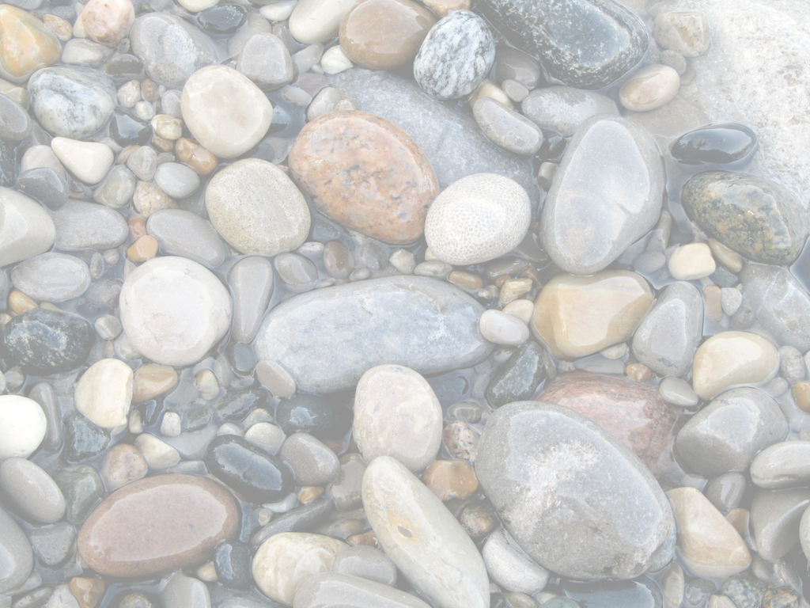

Stat 585 - git and github
Heike Hofmann
What is git?
- Git is a version control system that was created to help developers manage collaborative software projects. Git tracks the evolution of a set of files, called a repository or repo.
- This helps us
- merge conflicts that arise from collaboration
- rollback to previous versions of files as necessary
- store master versions of files, no more
paper_final_final_I_really_mean_it.docx
Your Turn (5 min)

This Your Turn is just a prep to get ready for a bigger Your Turn later. It’ll take a couple of minutes of your time, but may need more time from github …
Here goes: Do you have a github account?
- No? Create a free account at https://github.com/
- Yes? Then log into it.
- Do you remember your login and password? If not, try out different emails and let github send you the info.
Git Terminology
from github glossary
- Repository: the basic element of git - like a project’s folder. A repository contains all of the project files, and their revision history. One person owns a repository, multiple people can collaborate. Can be either public or private.
- Remote: This is the version of something that is hosted on a server. It can be (and usually is) connected to a local clone.
- Clone: A local copy of a repository that lives on your computer instead of on a website’s server somewhere
- Fork: a remote copy of a repository stored under your account.Forks allow you to freely make changes to a project without affecting the original.
Terminology (cont’d)
- Pull: When you are fetching changes from the remote repository and merging them with your local clone.
- Commit: A checkpoint for the local clone to save changes to a file (or set of files). Every time you commit, git creates a unique ID that allows you to keep record of what changes were made when and by who.
- Push: Sending your committed changes to the remote repository.
Terminology (cont’d)
- Pull Request: Proposed changes to a repository submitted by a user and accepted or rejected by a repository’s collaborators.
- Issue: Issues are suggested improvements, tasks or questions related to the repository.
Repositories
By default, all materials on GitHub are public. This is good because you are getting your work out there and contributing to the open source community!
If you need private repos, checkout GitHub for Education - free private repos for students/postdocs/professors.

Big ‘Your turn’ coming up!
Overview
In this activity you are going to learn how to collaborate using Github. With a partner you will learn some basics which allow you to share and edit files on Github.
- Create a git repository hosted at GitHub
- Build
README.md file
- Commit changes to repository
- Collaborate by forking and editing partners file
- Explore Github features: graphs, diff, blame, ect.
Create a repository with a README.md file (10 minutes)
Step 1: First we are going to create a repository within our Github user account.
Follow along with your instructor and perform these steps:
- Go to your Github profile. The url should be http://github/your-user-name.
- Create a new Github repository, click new button, under the repositories tab.
- Name your repository
work-organization-your-name
- In the details write “tips to organizing research”.
- Click the initiate a
README.md file option.
So far
- Once the repository is created you will be directed to the repository page which now has its own web address.
- Each repository on Github has a unique url so you can easily share.
- The git history is a detailed history of all the changes made to that file. One of the features of using Github is the ability to view your repository history which are displayed in the Graphs section of your Github repository page.
- At this point in the git history of your
work-organization-your-name repository there is only one commit.
Edit the README.md file (5 minutes)
- Go to the
work-organization-your-name repository main page. Click on README.md, then click “edit this file”. Add the following information into the README.md file:
- Name?
- What kind of scientist do you tell people you are at dinner parties?
- In the past month, what are the three main activities you have been doing at work?
- What are the three most important tools/strategies you use for organizing your work?
tip: Notice that you can use markdown syntax. Use this guide for Github’s flavor of Markdown. Use the “Preview” button to view the formatting of your readme.md file.
Commit
- Commit takes a snap shot of your project. Each commit includes a commit message that concisely defines changes made or project state at the time of the commit.
- Summarize the changes that you have made in 50 characters or less and click the commit button.
- Check out the git history. You should now see two commits.
Edit and collaborate with your partner
Collaborate
Now it is time to collaborate with your partner. Navigate to your partner’s repository by typing the url directly into your address bar. In order to edit someone else’s repository you usually follow this simplified work flow:
- Fork their repository to your user account
- Make edits and commit
- Create a pull request that merges your changes into their repository.
tip: Depending on the project there are variations on the above work flow. Often the rules for contributing to a project are outlined in a file called CONTRIBUTING.md within the repository. One of the more often used works flows is Github Flow.
Forking
- Forking is creating a copy of a git repository into your own account.
- Forking allows you to make changes to a repository without affecting the main repository of the project.
- This is one of the most exciting aspects of Github - you essentially encouraged to copy and play with anyone’s code!
Forking
- To fork your partner’s repository click the “fork” button in the top left hand part of your screen.
- When it asks where you would like to fork the repository, choose your user account (if you are new to Github, this should be the only option).
Make edits and commit
- You should now have a copy of your partners repository,
work-organization-their-name.
- Github keeps track of the entire git history of the project and all forked copies made of the project.
- Edit your partners repository by clicking the edit button.
- Paste in the answers to your questions under theirs and make a commit.
Create a pull request
- A pull request is the final step in the collaboration process, essentially asking if the edits made to your copy can be incorporated into another repository.
- Make sure you are in your copy of your partner’s repository by looking at the url - your user name should preface the repository name.
- Click the New Pull Request button. You will get an overview of the changes you made to the repository.
- Click the “Create a Pull Request” button to continue the pull request. Your partner will now get a notification of a pull request on their main repository, as will you if your partner made changes.
- Go ahead and accept this pull request.
Explore Github Features
Now that you have accepted the pull request. Take a few minutes to explore the git history using the Graphs section of the repository.
Looking ahead …
In this class we will use git & github for
- lab assignments,
- blog posts,
- for distributing the final project.